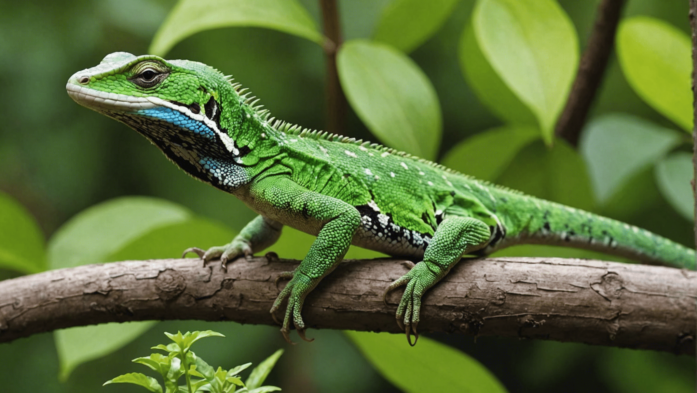

Lizard:
A lizard is a small to medium-sized reptile with scaly skin and a long body, often characterized by four legs and a tail. Found in diverse environments, they are known for their ability to regenerate lost tails and their wide range of colors and patterns.